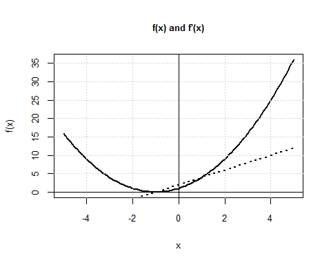
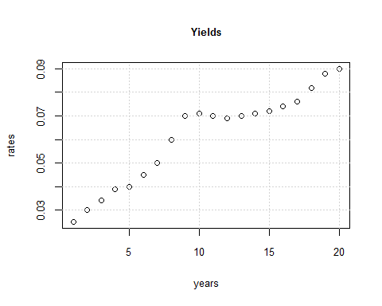
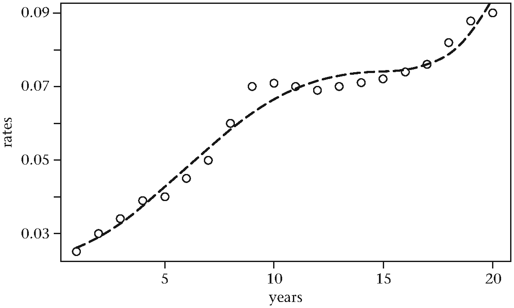
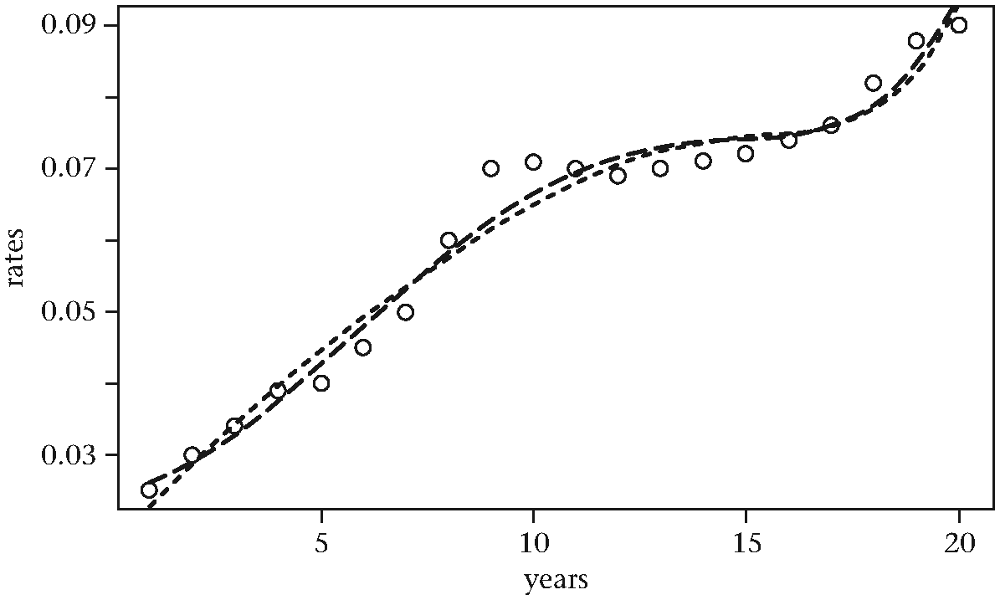
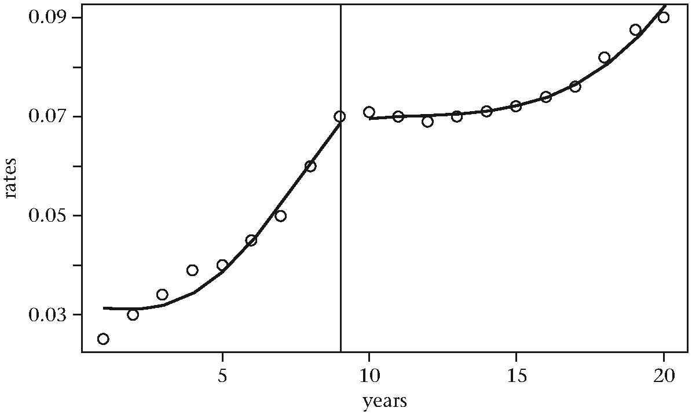
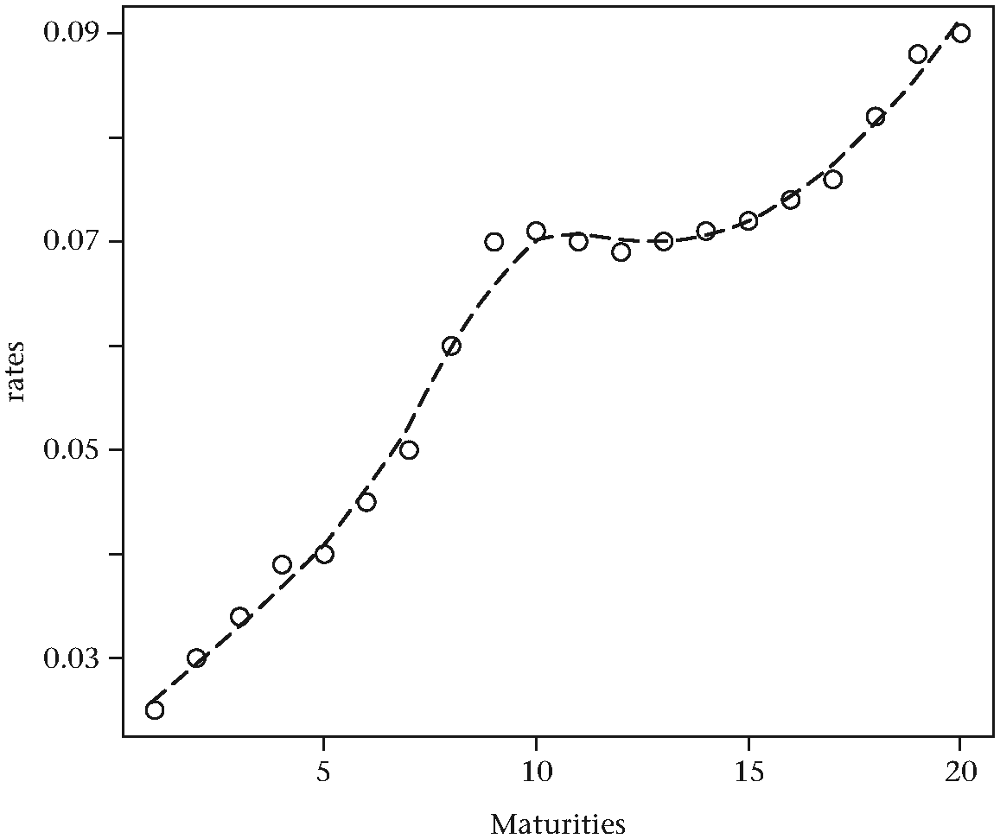
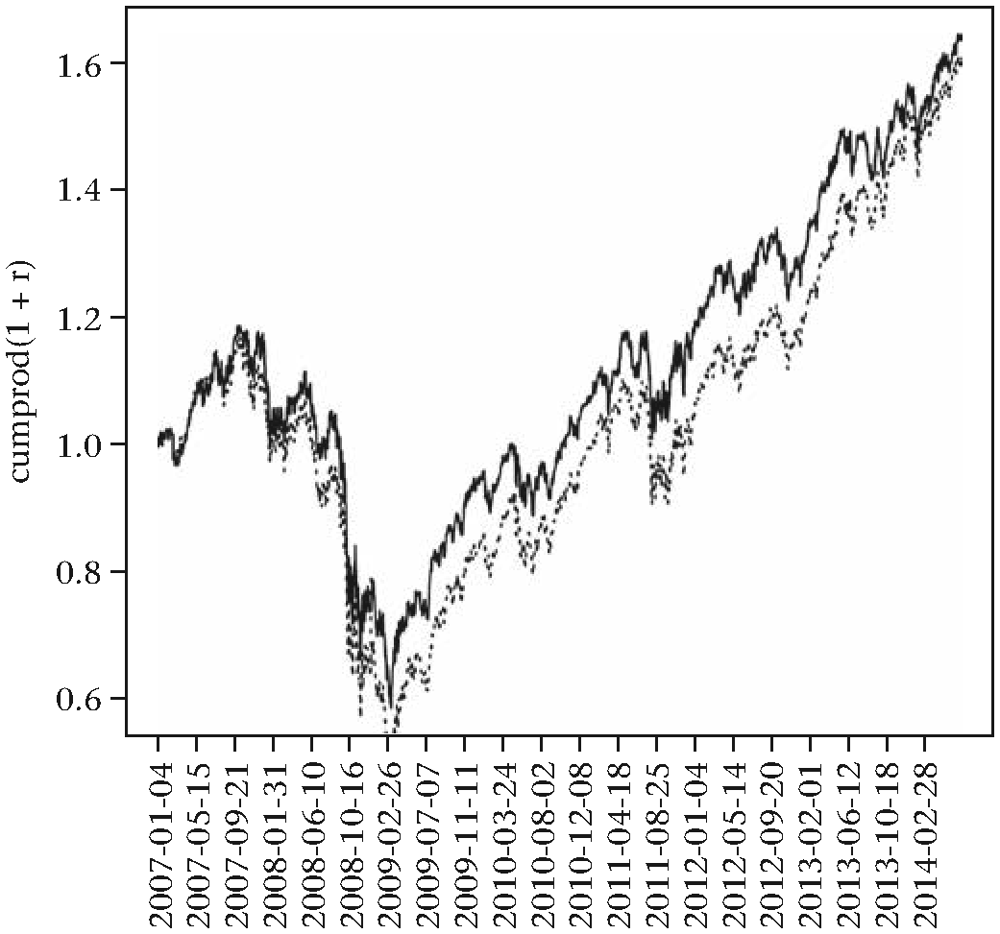

第10章 最优化
考虑这样一个问题：如何从成千上万个投资选择中找到一个最佳的资产组合方式，从而以最小的风险达到最高的收益率。解决这个问题的方法涉及到在一定的限制条件约束下最大化或者最小化某个目标函数。在我们的例子中，目标函数可能是在某段时间内某个组合策略的总收益除以该策略的最大回撤。约束条件可能是该组合投资中每个资产的最大投资额。在金融、计算机科学和物理科学中的很多有趣的问题都取决于模型的设定和使用。这些模型的数学公式通常都包括最少一个参数作为模型设定的输入项。最优化方法就是数学的一个分支，它提供了在约束条件下找到这些参数最优值的技术。R中有很多关于最优化方法的包，在本章中我们会选择其中某些包作为学习对象。
以抛物线为引子
当取何值时，函数能取得最小值？ 微积分告诉了我们解决这个问题的方法。可以对函数取对的一阶导数并令其为0。由此求解出的值便是上面问题的解：
解出的值到底可以使得原函数取得最大值还是最小值可以通过检查在该值处的二阶导数来判断。然而，这个例子并不是要做一个微积分知识的回顾，只是想告诉大家，最优化问题与导数以及高阶导数有着密切的关系。很多最优化算法都在某种形式上依赖于这些导数。
下面的图展示了及其一阶导数的函数图：
# 创建该函数
f <- function(x) {
return((1 + x) ^ 2)
}
# 创建该函数的一阶导数函数
fp <- function(x) {
return(2 * (1 + x))
}
# 画出函数图及其一阶导数函数图
x <- seq(-5, 5, 0.1)
plot(x, f(x), type = 'l', lwd = 2,
main = "f(x) and f'(x)",
cex.main = 0.8,
cex.lab = 0.8,
cex.axis = 0.8)
grid()
lines(x, fp(x), lty = 3, lwd = 2)
abline(h = 0)
abline(v = 0)
图10.1 抛物线函数及其导数
虚线图（也就是的一阶导数）与相交于处。 这个方法假设我们已经知道了目标函数导数的函数形式。对于较为复杂的函数，如果事先知道该函数关于各参数的偏导数，这个方法还可以应用到解决复杂函数多维度的最优化问题。
牛顿法
牛顿法是一种流行的数值解法，用来求得某个函数取值为0时的解。我们之前提到过，我们关心的很多最优化解法都可以通过操作目标函数的一阶导和二阶导得到解决。令 这些导数函数为0是快速解决最优化问题的重要方法。牛顿法就是这些算法中的一员。因为牛顿法易于理解，我们接下来将作简要阐述。至于一些更高阶更稳健的算法，我们依赖相关的R包来完成必要的计算。
牛顿法主要是将函数在处进行泰勒展开，通过构建一系列的最后收敛到一个稳定点满足。牛顿法的迭代从一个假设的初始点开始，然后不断迭代，反复改善估计值，最后得到最优估计。该算法中用来生成估计序列的下一个值的公式为：
在R中，这一步对应下面的代码为：
f <- function(x) {
return(x ^ 2 - 4 * x + 1)
}画出这个函数的函数图可以看出它的两个根分别位于-4和0附近：
uniroot(f, c(-8, -1))
## $root
## [1] -4.236068
## $f.root
## [1] -2.568755e-07
## $iter
## [1] 8
## $estim.prec
## [1] 6.103516e-05
uniroot(f, c(-1, 2))
## $root
## [1] 0.236044
## $f.root
## [1] -0.0001070205
## $iter
## [1] 6
## $estim.prec
## [1] 6.103516e-05uniroot()函数来自于R的基础安装包，它的返回值正是我们所感兴趣的。它给出的返回值-4.236068和0.236044十分接近于真实解。接下来我们会编写一段朴素的牛顿法代码，并将输出结果与这两个值进行比较。
下面的代码基于此篇文章http://www.theresearchkitchen.com/archives/642。这篇文章的作者在R中实现了牛顿法的一种简单形式并且介绍了eval()函数的使用。在我们的第二种实现方法中也会用到eval()函数，通过符号计算来操作导数函数。
# 基于一阶逼近的牛顿法
newton <- function(f, tol = 1E-12, x0 = 1, N = 20) {
# N = 总迭代次数
# x0 = 初始猜测值
# tol = abs(xn+1 - xn)
# f = 待求根的函数表达式
h <- 0.001
i <- 1; x1 <- x0
p <- numeric(N)
while (i <= N) {
df_dx <- (f(x0 + h) - f(x0)) / h
x1 <- (x0 - (f(x0) / df_dx))
p[i] <- x1
i <- i + 1
if (abs(x1 - x0) < tol) {
break
}
x0 <- x1
}
return(p[1:(i-1)])
}对于我们的目标函数，newton()函数应该返回一个包含收敛序列值的向量，该序列不断逼急真实解。因为真实解有两个，因此我们需要用两个不同的初始值来调用该函数：
newton(f, x0 = -10)
## [1] -6.312270 -4.735693 -4.281609 -4.236513
## [5] -4.236068 -4.236068 -4.236068 -4.236068
newton(f, x0 = 10)
## [1] 4.2085746 1.5071738 0.4665599 0.2468819
## [5] 0.2360964 0.2360680 0.2360680 0.2360680在返回序列中，之所以有重复值是因为我们设定的容忍阈值，该值默认为1e-12. 如果我们将该值提高，便可以看出这些重复值其实有所差别：
options(digits = 14)
newton(f, x0 = 10)
## [1] 4.20857464272283 1.50717378796250 0.46655991958819
## [5] 0.24688186711921 0.23609640037269 0.23606798403444
## [8] 0.23606797750125 0.23606797749979 0.23606797749979这个精度对于政府部门的工作来说已经足够了。可以看出，如果设定的初始值与真实解越接近，那么所需要的迭代次数则越少。最后的返回值也与容忍阈值有关，容忍度越小（对应于更小的精度），计算速度越快：
newton(f, x0 = 0.25)
## [1] 0.23611419684515 0.23606798830978 0.23606797750221
## [4] 0.23606797749979 0.23606797749979R同样可以作符号计算。给定一个数学表达式， 函数D()可以给出函数关于某个变量的偏导数的符号形式。下面就是符号计算的一个例子：
# 创建一个函数表达式
e <- expression(sin(x))
# 计算导数函数
D(e, "x")
## cos(x)这是计算函数及其导数函数的一种方法，我们要在R中使用表达式对象：
f_expr <- expression(x ^ 2 + 4 * x - 1)要想计算某个函数表达式在特定点的值，我们要用到eval()函数，并将求值的点作为列表输入给该函数：
eval(f_expr, list(x = 2))
## [1] 11接下来便可以使用D()函数计算函数导数的符号形式，并利用newton()函数求解：
newton_alternate <- function(f, tol = 1E-12, x0 = 1, N = 20) {
# N = 总迭代次数
# x0 = 初始猜测值
# tol = abs(xn+1 - xn)
# f = 待求根的函数表达式
# 计算导数函数的符号形式
df_dx = D(f, "x")
i <- 1; x1 <- x0
p <- numeric(N)
while (i <= N) {
x1 <- (x0 - eval(f, list(x = x0)) /
eval(df_dx, list(x = x0)))
p[i] <- x1
i <- i + 1
if (abs(x1 - x0) < tol) {
break
}
x0 <- x1
}
return(p[1:(i-1)])
}
newton_alternate(f_expr, x0 = 10)
## [1] 4.20833333333333 1.50685123042506 0.46631585084907
## [4] 0.24681560399775 0.23609368309733 0.23606797764754
## [7] 0.23606797749979 0.23606797749979
newton_alternate(f_expr, x0 = -10)
## [1] -6.3125000000000 -4.7359601449275 -4.2817360731259
## [4] -4.2365249924418 -4.2360680241934 -4.2360679774998
## [7] -4.2360679774998暴力求解法
接下来这个例子我们看一下如何在一蔟散点中找到一条最佳拟合直线。该直线可以由斜率和截距刻画出来。给定一簇散点，我们可以通过最小化某个目标函数的方法得到最优斜率和截距的估计值。给定关于输入参数的约束条件，并在此条件下最大化或者最小化某个函数正是一个最优化问题。在接下来的例子中，目标函数是所有散点与最优拟合直线之间距离的平方和函数。为了展示这个优化过程，我们将人为生成一个散点图，这样我们便知道其最优拟合直线的斜率和截距值的真实值。而我们的目标是，通过数据和最优化方法确定这一对斜率和截距值：
# 生成一系列关于x的随机点
set.seed(123)
x <- rnorm(100, 0, 1)
# 令y为关于x的一个函数
y <- 3.2 + 2.9 * x + rnorm(100, 0, 0.1)
plot(x, y)明显可以看出，变量和之间存在某种程度的线性相关关系。在不知晓额外信息的情况下，我们可以假设二者之间的关系可以用直线函数来表示。我们的目标就是找到和的估计值：
objective_function <- function(y, x, a, b) {
value <- sum((y - (a * x + b)) ^ 2)
return(value)
}能够使得我们的目标函数取得最小值的和值就是与真实值的代表值。下面是这个问题的一个暴力解法：
# 创建一系列的a与b值，并用循环遍历每一个值
a <- seq(-10, 10, 0.25)
b <- seq(-10, 10, 0.25)
output <- list()
z <- 1
for(i in 1:length(a)) {
for(j in 1:length(b)) {
output[[z]] <- c(objective_function(y, x, a[i], b[j]),
a[i], b[j])
z <- z + 1
}
}
# 用输出的列表对象生成一个矩阵并从中找到最小值
mat <- do.call(rbind, output)
colnames(mat) <- c("obj", "a", "b")
smallest <- which(mat[, "obj"] == min(mat[, "obj"]))
mat[smallest, ]
## obj a b
## 2.16076 3.00000 3.25000可以看出，暴力法得到的解接近真实解。因为我们设定的参数值搜索空间力度并不高，因此得到的解并不是一个精确解。如果我们对与的取值设定更小的取值间隔，计算时间会随之增加，但更可能得到全局最小值：
a = seq(-5, 5, 0.1)
b = seq(-5, 5, 0.1)下面便是得到的新解：
## obj a b
## 0.9077592 2.9000 3.2000无论搜索空间中涉及到多少个变量，复杂性有多高，只要暴力法的搜索粒度够细都能够最终找到最优解。但唯一的问题是我们是否愿意等待很长的时间去得到这样的精确解。只有在问题本身很简单时，暴力搜索法才具有可行性，对于复杂性稍高的问题，暴力法的运行需要过长的时间。
现实世界的很多应用实例中，目标函数以及它们的导数函数的解析形式往往不能轻而易举的获得。在这样的情况下，我们必须依靠其他的数值解法来得到合理的参数估计值。
R中的最优化程序
R提供了一些封装函数，可以帮助我们解决最优化问题。比较值得注意的几个函数有optimize(), optim()， solve.QP()以及DEoptim()[10, 11, 60]。还有很多第三方包也提供了一些解决最优化问题的函数，但他们最优化方法的角度不同。
当我们的脑海了已经有了一个明确的目标函数形式时，则可以使用optim()函数。下面是optim()的函数参数：
args(optim)
function (par, fn, gr = NULL, ...,
method = c("Nelder-Mead",
"BFGS", "CG", "L-BFGS-B", "SANN", "Brent"),
lower = -Inf,
upper = Inf,
control = list(),
hessian = FALSE)fn参数代表最小化的目标函数。该函数需要使用向量par作为输入然后返回一个标量值。par参数是一个包含初始化值的向量。误差平方和是在实际中常用的目标函数形式。“BFGS”法被认为是一种伪牛顿法，在本质上与我们之前考虑过的方法十分类似。另外一些其他的方法，比如“CG”法， 使用了共轭梯度实现法，可以被用作解决多参数最优化问题。
一个关于曲线拟合的练习
下一个应用实例可能会引起固定收益交易员的兴趣。假设有一条收益曲线（yield curve), x轴表示到期日，y轴表示利率。我们的目标就是在给定的一些点中拟合出一条曲线。同样的方法也可以被期权交易员用来拟合一条隐含波动率的平滑曲线。我们此处不考虑这些曲线是否是无套利3（arbitrage-free）的，这里只当做是一个简单的曲线拟合的练习：
# 创建一个虚拟的收益值向量
rates = c(0.025, 0.03, 0.034, 0.039, 0.04,
0.045, 0.05, 0.06, 0.07, 0.071,
0.07, 0.069, 0.07, 0.071, 0.072,
0.074, 0.076, 0.082, 0.088, 0.09)
maturities = 1:20
plot(maturities, rates, xlab = "years",
main = "Yields",
cex.main = 0.8,
cex.lab = 0.8,
cex.axis = 0.8)
grid()
图10.2 利率与到期日图
我们可以尝试用一个简单的五阶多项式来拟合这个散点图。
poly_5 <- function(x, p) {
f <- p[1] + p[2] * x + p[3] * x^2 +
p[4] * x^3 + p[5] * x^4 + p[6] * x^5
return(f)
}
obj_5 <- function(x, y, p) {
error <- (y - poly_5(x, p)) ^ 2
return(sum(error))
}
# 拟合参数。假设初始值都为0
out_5 = optim(obj_5, par = c(0, 0, 0, 0, 0, 0),
x = maturities, y = rates)
out_5
## $par
## [1] 2.4301235956099e-02 1.3138951147963e-03
## [3] 5.5229326602931e-04 7.5685740385076e-07
## [5] -4.2119475163787e-06 1.5330958809806e-07
## $value
## [1] 0.00017311660458207
## $counts
## function gradient
## 501 NA
## $convergence
## [1] 1
## $message
## NULL接下里我们可以提取出多项式参数，并将该多项式曲线添加至原先的散点图上：
lines(poly_5(maturities, out_5$par), lwd = 1.5, lty = 2)
图10.3 利率图和多项式函数拟合曲线
看起来我们似乎得到了一个相当不错的拟合曲线，但感觉上我们还可以做的更好。拟合出的多项式还没有灵活的捕捉到数据中间的隆起部分。我们可以尝试更为高阶的多项式拟合，观察能够得到什么样的结果：
poly_7 <- function(x, p) {
f <- p[1] + p[2] * x + p[3] * x^2 +
p[4] * x^3 + p[5] * x^4 +
p[6] * x^5 + p[6] * x^6 +
p[7] * x^7
return(f)
}
obj_7 <- function(x, y, p) {
error <- (y - poly_7(x, p)) ^ 2
return(sum(error))
}
# 拟合参数。假设初始值都为0
out_7 <- optim(obj_7, par = c(0, 0, 0, 0, 0, 0, 0, 0),
x = maturities, y = rates)
lines(poly_7(maturities, out_7$par), lwd = 1.5, lty = 3)
图10.4 利率图和两条不同阶数的多项式拟合曲线
相比之前的五阶多项式，这个新的多项式拟合并没有表现更好。通过增加多项式的阶数，我们可以完全精确的拟合所有的数据点，但这样做很可能是错误的，因为它极有可能招致过拟合问题。
另外一个方法是认识到在到期日为10年的时候，我们的数据图显示数据发生了某种状态转移（regime shift）。据此观察，我们可以用两个低阶多项式拼接，并且在保证曲线连续性的基础上拟合该数据并减轻过拟合问题。这个方法更多的是艺术，而不是科学了，因为它依赖于应用人员有能力在曲线拟合练习中注入个人判断。比如说，基于各种宏观经济因素的考虑，交易员可能会觉得到期日短的债券收益曲线相比中长期到期日可能在形态上有所变化。
# 设定两个用于拟合的多项式函数
poly_5 <- function(x, a) {
f <- a[1] + a[2] * x + a[3] * x ^ 2 +
a[4] * x ^ 3 + a[5] * x ^ 4 +
a[6] * x ^ 5
return(f)
}
poly_3 <- function(x, offset, intercept, b) {
f <- intercept + b[1] * (x - offset) +
b[2] * (x - offset) ^ 2 +
b[3] * (x - offset) ^ 3
return(f)
}在到期日为9年时，我们需要确保两个多项式函数在此处具有相同的取值。要实现此要求，我们可以对三阶多项式的x轴在该点处设定一个抵消值。当x值等于此抵消值值，除了截距项意外，三阶多项式的其他项的系数全部降为0。然后限定这个截距值与五阶多项式在此处的取值相等。这便是我们实现将两个多项式平滑联结的方法：
obj_3_5 <- function(x, y, offset, p) {
# 所有的初始值都设定为无穷大
fit <- rep(Inf, length(x))
ind_5 <- x <= offset
ind_3 <- x > offset
fit[ind_5] <- poly_5(x[ind_5], p[1:6])
fit[ind_3] <- poly_3(x[ind_3], offset,
poly_5(offset, p[1:6]), p[7:9])
error <- (y - fit) ^ 2
return(sum(error))
}
# 拟合参数。假设所有初始值为0.
offset <- 9
out_3_5 <- optim(obj_3_5, par = rep(0, 9),
x = maturities, y = rates, offset = offset)
plot(maturities, rates, xlab = "years",
main = "Yields",
cex.main = 0.8,
cex.lab = 0.8,
cex.axis = 0.8)
grid()
lines(poly_5(maturities[maturities <= offset],
out_3_5$par[1:6]), lwd = 2)
lines(c(rep(NA, offset),
poly_3(maturities[maturities > offset], offset,
poly_5(offset, out_3_5$par[1:6]),
out_3_5$par[7:9])), lwd = 2)
abline(v = offset)
图10.5 利率图与分段多项式函数拟合曲线
上面这种对数据拟合两个多项式的方法显得有些刻意为之，而且确实还有更好的方法可以实现同样的目的。平滑样条法（smoothing splines）就是其中之一。另外还有一种十分流行的方法是对数据应用局部加权回归进行拟合。loess()函数就是为这种方法量身打造的：
# 对数据用loess进行拟合
obj <- loess(rates ~ maturities, span = 0.5)
# 画出数据与拟合曲线图
plot(maturities, rates, main = "Rates", cex.main = 0.8)
lines(predict(obj), lty = 2)span参数用于控制局部拟合过程的平滑自由度。 这个练习的目的是展示如何使用optim()函数并且告诉大家我们的目标函数可能是十分复杂的。这样有助于我们认识并解决一些跟金融实务相关的最优化问题。

图10.6 利率图与loess拟合曲线
投资组合最优化
在资金约束条件下创建一个投资组合，并要求该组合满足一定的风险和收益要求，最优化方法非常适用于此类问题。下面的最优化例子是基于Guy Yolin的工作。他的幻灯片可以通过访问http://www.rinfinance.com/RinFinance2009/presentations/yollin_slides.pdf获得。
我们经常对于识别出具有最优风险补偿特性的股票组合感兴趣。在文献中经常提到的例子就是获取具有最小方差的投资组合。该组合是通过解下面的二次规划问题得到的：
实际上，我们就是需要在满足总体组合收益率限制条件的前提下最小化投资组合的风险值。我们还可以对组合内每一只股票的权重设定限制条件。这样的最优化问题最后可以通过一种有效的方式得到解决。R中的quadprog软件包就包含了一个通用的二次规划解函数叫做solve.QP().
更多更加有趣同时也更加实际的例子中所要最小化的目标函数很可能是非正常的函数，难以获得优雅的数学解析解。在这些情况下，我们要依靠更加复杂的最优化方法。DEoptim软件包就提供了这样一种算法。据Yolin描述，“DE方法是一个既简单又强大的基于总体的随机函数最小化法，特别适用于多维度多模式函数的全局最优化问题（也就是一些确实很难求解的最优化问题）。该方法于上个世纪90年代中期由伯克利的研究人员Ken Price和Rainer Storm所开发[62]。”在本章中，我们不讨论有关DE算法的细枝末节，感兴趣的读者可以参考这里：http://www1.icsi.berkeley.edu/storn/code.html
这里我们感兴趣的是这样一个实例：给定一列潜在的股票，找到每个股票的最优权重值以最小化该投资组合的最大回撤（maximum drawdown）。这里我们需要允许设定一项限制条件，就是所有的权重值之和为100%。我们还可以设定一些限制条件，比如说只要权重值小于百分之2的都强制设定为0。
这是一个非常复杂的目标函数。但幸运的是，我们可以在R中用几行代码就完成相关编程：
install.packages("DEoptim")
require(DEoptim)
# 回撤函数
compute_drawdown <- function(x, returns_default = TRUE,
geometric = TRUE) {
# x = 损益（PnL)或者收益率向量
# 如果 returns_default = FALSE, 那么geometric
# 参数会被忽略，使用PnL作为x输入
# 输出 = 最大回撤
if(returns_default) {
# 计算累积收益
if(geometric) {
cumulative_return <- cumprod(1 + x)
} else {
cumulative_return <- 1 + cumsum(x)
}
max_cumulative_return <- cummax(c(1, cumulative_return))[-1]
drawdown <- -(cumulative_return / max_cumulative_return - 1)
} else {
# 使用PnL向量
cumulative_pnl <- c(0, cumsum(x))
drawdown <- cummax(cumulative_pnl) - cumulative_pnl
drawdown <- drawdown[-1]
}
# 输出PnL或者收益率的最大回撤向量
return(drawdown)
}
obj_max_drawdown <- function(w, r_matrix, small_weight) {
# w 是每个股票的权重系数
# r_matrix 是所有股票的收益率矩阵
# 投资组合收益率
portfolio_return <- r_matrix %*% w
# 最大回撤
drawdown_penalty <- max(compute_drawdown(portfolio_return))
# 生成权重和的惩罚成分
weight_penalty <- 100 * (1 - sum(w)) ^ 2
# 生成负权重值的惩罚成分
negative_penalty <- -sum(w[w < 0])
# 生成小权重值的惩罚成分
small_weight_penalty <- 100 * sum(w[w < small_weight])
# 待最小化的目标函数
obj <- drawdown_penalty + weight_penalty +
negative_penalty + small_weight_penalty
return(obj)
}
# 对多个股票计算收益率矩阵
symbol_names <- c("AXP", "BA", "CAT", "CVX",
"DD", "DIS", "GE", "HD", "IBM",
"INTC", "KO", "MMM", "MRK",
"PG", "T", "UTX", "VZ")
# 将这些价格序列载入内存
price_matrix <- NULL
for(name in symbol_names) {
# Extract the adjusted close price vector
price_matrix <- cbind(price_matrix, get(name)[, 6])
}
colnames(price_matrix) <- symbol_names
# 计算收益率
returns_matrix <- apply(price_matrix, 2, function(x) diff(log(x)))
# 设定一个小权重阈值，低于该阈值的权重都强制降为0%。
small_weight_value <- 0.02
# 设定权重的上下限
lower <- rep(0, ncol(returns_matrix))
upper <- rep(1, ncol(returns_matrix))
optim_result <- DEoptim(obj_max_drawdown, lower, upper,
control = list(NP = 400, itermax = 300, F = 0.25, CR = 0.75),
returns_matrix, small_weight_value)下面就是在最优化过程结束之后显示在控制台窗口的内容。可以通过设定参数值trace = FALSE关闭该显示。
...
Iteration: 299 bestvalit: 0.515606 bestmemit:
0.020494 0.021594 0.020232
0.044563 0.020729 0.172967
0.021248 0.105254 0.084343
0.032526 0.067988 0.034999
0.020617 0.196651 0.042869
0.033833 0.056965
Iteration: 300 bestvalit: 0.515606 bestmemit:
0.020494 0.021594 0.020232
0.044563 0.020729 0.172967
0.021248 0.105254 0.084343
0.032526 0.067988 0.034999
0.020617 0.196651 0.042869
0.033833 0.056965DEoptim()的输出结果是一个包含很多列表的列表对象。其中optim列表包含了所有我们感兴趣的参数。其中嵌套的bestmem元素包含了估计出来的最佳权重值。
weights <- optim_result$optim$bestmem有意思的是，所有的非0权重值都大于百分之2。这是因为我们对目标函数添加了小权重惩罚项。我们还可验证重所有的权重之和是否等于1。
sum(weights)
0.9978此处我们可以将权重标准化一下，保证所有权重之和严格等于1.
weights <- weights / sum(weights)接下来让我们比较一下最佳权重的投资组合的累积收益率与等权重投资组合收益率。我们希望看到的是能够验证由DEoptim得到的最优化组合的最大回撤确实更小。
# 等权重投资组合
equal_weights <- rep(1 / 17, 17)
equal_portfolio <- returns_matrix %*% equal_weights
equal_portfolio_cumprod <- cumprod(1 + equal_portfolio)
# 最优最大回撤投资组合
optimized_portfolio <- returns_matrix %*% weights
drawdown_portfolio_cumprod <- cumprod(1 + optimized_portfolio)
main_title <- "Equal vs. Optimized Weights"
plot(drawdown_portfolio_cumprod, type = 'l', xaxt = 'n',
main = main_title, xlab = "", ylab = "cumprod(1 + r)")
lines(equal_portfolio_cumprod, lty = 3)
grid(col = 'black')
# 设定x轴的标签
label_location <- seq(1, length(drawdown_portfolio_cumprod),
by = 90)
labels <- rownames(returns_matrix)[label_location]
axis(side = 1, at = label_location, labels = labels,
las = 2, cex.axis= 0.8)
图10.7 等权重与优化权重的对比
下面是两种投资组合的最大回撤值：
# 等权重组合
max(compute_drawdown(equal_portfolio))
## [1] 0.597
# 最小化最大回撤的最优化组合
max(compute_drawdown(optimized_portfolio))
## [1] 0.515最优化之后的投资组合确实表现出了更佳的累积几何收益率。这个结果与我们所期望的不谋而合，因为我们的分析完全是基于样本内的数据。要确定最优化的投资组合是否真的更优，我们还必须将同样的研究过程用样本外数据做进一步的验证，并且保留第三份数据用作稳健性检验和验证测试。
另外需要注意的重要一点就是DE算法每次运行都会返回不同的结果。这是由于该算法本身内在随机特征所导致的。对于任何最优化算法的输出结果我们都应该持一定的保留态度，投资组合的创建者应该充分注意到这一点并且确保组合内的权重系数不仅合理和稳定，而且能够实实在在的具有我们所期望的表现。 关于最优化的数学理论是非常庞大的。对此些感兴趣的读者，如果想在R中继续探索这些理论，我推荐下面的一个在线材料作为导论：http://zoonek.free.fr/blosxom/R/2012-06-01_Optimization.html.
总结
本章的内容都是关于如何利用R中的最优化工具集解决在给定一些限制条件的前提下对某个自定义目标函数进行最小化或者最大化的问题。我们展示了一个调动读者兴趣的实例，讲解了牛顿法和暴力解法。我们提供了利用optim()函数拟合曲线的练习实例。本章最后深入探讨了利用DEoptim包（Differential Evolution）解决投资组合最优化的问题。
翻译：冯凌秉 审校：邓一硕